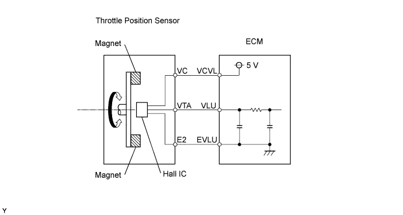
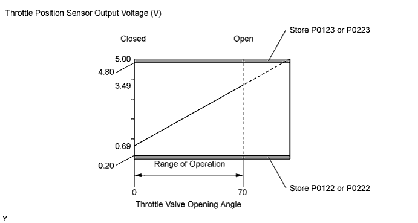
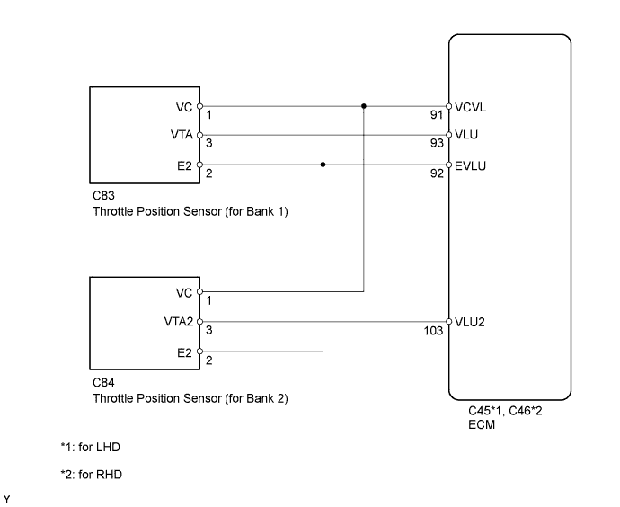
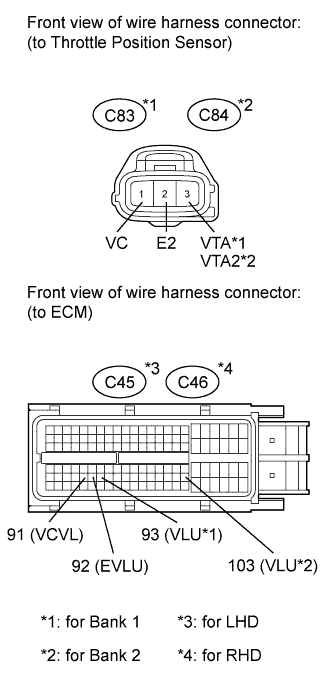
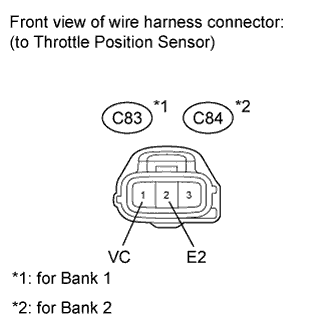

DTC P0122 Throttle / Pedal Position Sensor / Switch "A" Circuit Low Input |
DTC P0123 Throttle / Pedal Position Sensor / Switch "A" Circuit High Input |
DTC P0222 Throttle / Pedal Position Sensor / Switch "B" Circuit Low Input |
DTC P0223 Throttle / Pedal Position Sensor / Switch "B" Circuit High Input |

| DTC Detection Drive Pattern | DTC Detection Condition | Trouble Area |
| Engine switch on (IG) for 3 seconds | Throttle position sensor (for Bank 1) output (VLU) is less than 0.2 V for 3 seconds (1 trip detection logic). |
|
| DTC Detection Drive Pattern | DTC Detection Condition | Trouble Area |
| Engine switch on (IG) for 3 seconds | Throttle position sensor (for Bank 1) output (VLU) is more than 4.8 V for 3 seconds (1 trip detection logic). |
|
| DTC Detection Drive Pattern | DTC Detection Condition | Trouble Area |
| Engine switch on (IG) for 3 seconds | Throttle position sensor (for Bank 2) output (VLU2) is less than 0.2 V for 3 seconds (1 trip detection logic). |
|
| DTC Detection Drive Pattern | DTC Detection Condition | Trouble Area |
| Engine switch on (IG) for 3 seconds | Throttle position sensor (for Bank 2) output (VLU2) is more than 4.8 V for 3 seconds (1 trip detection logic). |
|


| 1.CHECK HARNESS AND CONNECTOR (THROTTLE POSITION SENSOR - ECM) |
 |
Disconnect the throttle position sensor connector.
Disconnect the ECM connector.
Measure the resistance according to the value(s) in the table below.
| Tester Connection | Condition | Specified Condition |
| C83-1 (VC) - C45-91 (VCVL) | Always | Below 1 Ω |
| C83-3 (VTA) - C45-93 (VLU) | Always | Below 1 Ω |
| C83-2 (E2) - C45-92 (EVLU) | Always | Below 1 Ω |
| Tester Connection | Condition | Specified Condition |
| C84-1 (VC) - C45-91 (VCVL) | Always | Below 1 Ω |
| C84-3 (VTA2) - C45-103 (VLU2) | Always | Below 1 Ω |
| C84-2 (E2) - C45-92 (EVLU) | Always | Below 1 Ω |
| Tester Connection | Condition | Specified Condition |
| C83-1 (VC) - C46-91 (VCVL) | Always | Below 1 Ω |
| C83-3 (VTA) - C46-93 (VLU) | Always | Below 1 Ω |
| C83-2 (E2) - C46-92 (EVLU) | Always | Below 1 Ω |
| Tester Connection | Condition | Specified Condition |
| C84-1 (VC) - C46-91 (VCVL) | Always | Below 1 Ω |
| C84-3 (VTA2) - C46-103 (VLU2) | Always | Below 1 Ω |
| C84-2 (E2) - C46-92 (EVLU) | Always | Below 1 Ω |
| Tester Connection | Condition | Specified Condition |
| C83-1 (VC) or C45-91 (VCVL) - Body ground | Always | 10 kΩ or higher |
| C83-3 (VTA) or C45-93 (VLU) - Body ground | Always | 10 kΩ or higher |
| C83-2 (E2) or C45-92 (EVLU) - Body ground | Always | 10 kΩ or higher |
| Tester Connection | Condition | Specified Condition |
| C84-1 (VC) or C45-91 (VCVL) - Body ground | Always | 10 kΩ or higher |
| C84-3 (VTA2) or C45-103 (VLU2) - Body ground | Always | 10 kΩ or higher |
| C84-2 (E2) or C45-92 (EVLU) - Body ground | Always | 10 kΩ or higher |
| Tester Connection | Condition | Specified Condition |
| C83-1 (VC) or C46-91 (VCVL) - Body ground | Always | 10 kΩ or higher |
| C83-3 (VTA) or C46-93 (VLU) - Body ground | Always | 10 kΩ or higher |
| C83-2 (E2) or C46-92 (EVLU) - Body ground | Always | 10 kΩ or higher |
| Tester Connection | Condition | Specified Condition |
| C84-1 (VC) or C46-91 (VCVL) - Body ground | Always | 10 kΩ or higher |
| C84-3 (VTA2) or C46-103 (VLU2) - Body ground | Always | 10 kΩ or higher |
| C84-2 (E2) or C46-92 (EVLU) - Body ground | Always | 10 kΩ or higher |
|
| ||||
| OK | |
| 2.CHECK ECM TERMINAL VOLTAGE (VC TERMINAL) |
 |
Disconnect the throttle position sensor connector.
Measure the voltage according to the value(s) in the table below.
| Tester Connection | Switch Condition | Specified Condition |
| C83-1 (VC) - C83-2 (E2) | Engine switch on (IG) | 4.5 to 5.5 V |
| Tester Connection | Switch Condition | Specified Condition |
| C84-1 (VC) - C84-2 (E2) | Engine switch on (IG) | 4.5 to 5.5 V |
|
| ||||
| OK | |
| 3.REPLACE DIESEL THROTTLE BODY ASSEMBLY (for Bank 1 or Bank 2) |
Replace the diesel throttle body assembly (for Bank 1 or Bank 2) (Click here).
| NEXT | |
| 4.READ VALUE USING INTELLIGENT TESTER |
Connect the intelligent tester to the DLC3.
Turn the engine switch on (IG) and turn the tester on.
Clear the DTCs (Click here).
Enter the following menus: Powertrain / Engine / Data List / Actual Throttle position or Actual Throttle position #2.
Check the movement of the throttle valve when idling the engine after starting it from engine switch on (IG).
| Condition | Tester Display |
| Engine switch on (IG) | -5 to 5% |
| Idling | 0 to 90% |
|
| ||||
|
| ||||
| 5.REPLACE ECM |
Replace the ECM (Click here).
|
| ||||
| 6.REPAIR OR REPLACE HARNESS OR CONNECTOR |
| NEXT | |
| 7.CONFIRM WHETHER MALFUNCTION HAS BEEN SUCCESSFULLY REPAIRED |
Connect the intelligent tester to the DLC3.
Clear the DTCs (Click here).
Turn the engine switch off.
Turn the engine switch on (IG) for 3 seconds.
Enter the following menus: Powertrain / Engine / DTC.
Confirm that the DTC is not output again.
| NEXT | ||
| ||